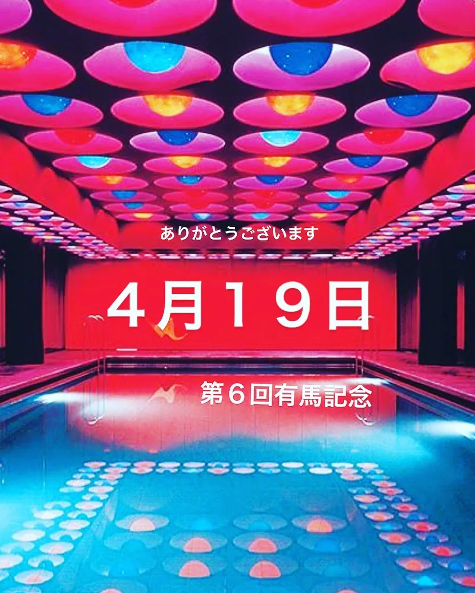

2022年4月12日
コロナ禍により、4周年、５周年を飛ばしましたが、、、

コロナ禍により、4周年、５周年を飛ばしましたが、、、 3年ぶりに、、、 ４月１９日（火）に６周年イベントをやらせていただきます！！！ 【第６回有馬記念】 タイミング合いましたら是非ともご来店ください！！ 周年プレイリスト作ってお待ちしております🙇♂️ 当日はゲストも来ていただきます🍺 15:00〜翌2:00までの予定です！ 従業員一同お待ちしております！！！ 詳細は後ほど、、、 #中華バル#中華#中華料理#福島区グルメ#路地裏#B級グルメ#中国#チャイニーズ#路地裏チャイニーズ有馬#有馬#シュウマイ#餃子#点心#フォローミー#followme#パクチー#麻婆豆腐